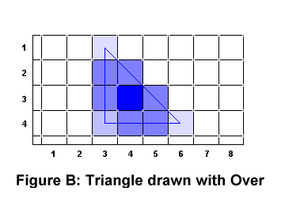

pha
really refers to the opacity of a pixel, which is derived generally from the
coverage of a pixel.
pha
really refers to the opacity of a pixel, which is derived generally from the
coverage of a pixel.Anti-aliasing is a technique in computer graphics of eliminating the "jaggies" of an image (yes that's a technical term, really) to make it look smoother. To get an anti-aliased string showing up on the screen, you will need to copy each character of the string out of a source location (font image) into a destination location (screen buffer). For each pixel you copy out of the source, you will need to calculate its alpha opacity before writing it to the destination.
There are two parts to the idea of alpha blitting - the alpha part and the blitting part (ingenious, huh?). We've already dealt with blitting a general section of a source image, so now let's apply this to drawing text. We'll get to the alpha stuff after that.
Again, here's the image of a section of the font file, with the 'A' being the character we will draw to the screen. The entire font file has 128 characters, and each character is 16 pixels wide and 16 pixels high.
The offset of the upper-left corner of a character in the font image is dependent on the character's ASCII value, the size of the character, and the number of bytes needed for each pixel. Take the letter 'A' in this example. Its offset in the font image is 4160 decimal, and here's how to get that number:
Thus, 65 * 16 pixels * 4 bytes / pixel = 4160 bytes. Using this initial offset and the information above about each character and the font file, copy the character out of the font and into the screen buffer. Do this for every character in the string, and voilà, you have a string of text on the screen.
A lot of people think of transparency when they hear the word
"alpha" in the context of graphics. They're right, sorta. Alpha
really refers to the opacity of a pixel, which is derived generally from the
coverage of a pixel.
What is meant by the coverage of a pixel? Let's say you're drawing a triangle. The bottom and the left of the triangle are horizontal and vertical, respectively. The remaining side is at 45°. Now fill this triangle with a blue color. Now draw it to the screen. The outline, zoomed in, is shown in Figure A.
Where are the 45° pixels? For that matter, if all these lines
go through the centers of pixels, chances are the left and bottom and
upper-right include a lot of half-covered pixels; the lower-left corner has a
one-quarter covered pixel and the two remaining corners have about a one-eighth
covered pixel, as visualized in Figure A.
So how do you turn this into actual pixels? The simplest way, and the way we're using, is called the over operation. To draw color A with coverage α over color B, the resulting color C is calculated as follows:
Cr = (αr * Ar) + ((1-αr)
* Br)
Cg = (αg * Ag) + ((1-αg) *
Bg)
Cb = (αb * Ab) + ((1-αb) *
Bb)
Or more succinctly, as we only have one α, apply this to each channel independently:
C = (α * A) + ((1-α) * B)
When we apply this to the case as listed above, with coverage values one,
one-half, one-quarter, and one-eighth, we get something that looks like Figure
B, only not quite so zoomed in, and no grid.
Things like this are where alpha opacity values originally come from. Don't
worry about how to calculate the alpha value, as the font image comes with an
alpha value for you. Concentrate on how to apply it using the over operator.
Here's how the value for the lower-left corner pixel was calculated, assuming a white background (B) upon which you draw a pure blue pixel with 25% coverage:
As you can see, the math is simple. In our case, we can simplify it even further. Our background color will always be black, which is represented as {0.0,0.0,0.0}. So, taking the general equation on a black background will yield:
C = (α * A) + ((1-α) * B)
C = (α * A) + ((1-α) * {0.0, 0.0, 0.0})
C = (α * A) + {0.0, 0.0, 0.0}
C = (α * A)
Notice that the pixels in the font file are all black, with some of them being darker than others. The lighter pixels are the anti-aliased ones, and they have alpha values closer to zero that distinguish them as such (0h is no coverage, while FFh is total coverage).
Wait... all the pixels are black? How will we be able to see the characters on a black background? Can we get text of different color? Yes you can. To do this, the easiest way is to set them manually by OR'ing the pixel's RGB portion with a hex color value, making sure not to change the alpha portion. So if you OR'ed a pixel with 007F7F7Fh, you'd set its color to gray.
We now introduce an optimized algorithm that uses MMX instructions to alpha compose all four channels of a pixel at once: